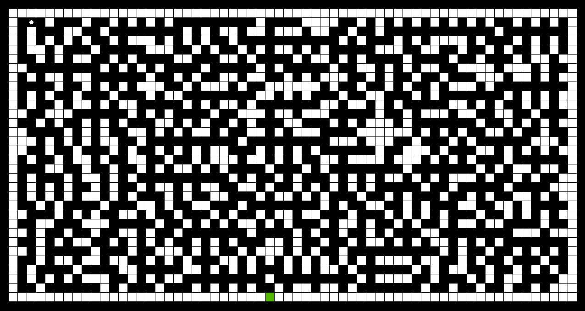

Projets
Python
Labyrinthe à génération procédurale
Ce projet consiste en la création d'un jeu de labyrinthe à génération procédurale, en utilisant la bibliothèque Tkinter, avec différents modes de jeux et difficultés, enregistrant des scores et paramétrages dans des fichiers textes.

Ce programme est le premier projet d'envergure que j'ai réalisé, au cours du quel j'ai découvert les notions fondamentales de boucle événementielle, de programmation orientée objet, de threads, ...
Ce projet comporte donc :
- Différents modes de difficultés, faisant varier la taille du labyrinthe
- Un système de clef pour dévérouiller la sortie
- Des pièges dans le labyrinthe pouvant éliminer le joueur
- Un mode de jeu avec un score qui sera enregistré dans un fichier, ainsi qu'un menu affichant les meilleurs scores
- Un menu options, permettant de configurer les contrôles du personnage et de choisir la résolution de la fenêtre
Voir le compte rendu completMachine learning
Machine learning fondamental
J'ai débuté le machine learning en apprennant les concepts essentiels, tels que la forme d'un réseau de perceptrons classique ou la rétropropagation du gradient.
Le premier réseau que j'ai réalisé était un simple réseau de perceptrons classique, avec 2 neurones en entrée, 3 neurones sur une couche cachée, et 1 neurone de sortie. Le réseau devait prédire une sortie en fonction des deux paramètres en entrée. Ces valeurs ne correspondaient à rien, l'objectif était simplement de réaliser un réseau de neurones sans framework capable de réaliser des prédictions correctes.
Ce réseau de neurones est donc simplement constitué de plusieurs matrices. Nous avons une matrice par couche de neurones, enregistrant les valeurs de chaque neurone, puis des matrices représentant les synapses : les connexions entre les couches de neurones. Les synapses comportent les poids : les coefficiants multiplicateurs utilisés pour réaliser la prédiction.
Par la suite j'ai dû m'intéresser aux concepts mathématiques de la descente de gradient, et la rétropropagation du gradient qui en découle. C'est cette dernière méthode qui va nous permettre de recalculer la valeur des poids pour réaliser une prédiction plus juste. C'est ainsi que se déroule l'entraînement : le réseau de neurones réalise une prédiction, nous appliquons ensuite la rétropropagation du gradient, en utilisant la différence entre ce qu'il aurait du prédire et ce qu'il a prédit, pour modifier les poids de sorte que la prochaine prédiction soit plus juste.
Utilisation de Tensorflow
Par la suite j'ai décidé de continuer à en apprendre plus sur le machine learning en utilisant le framework Tensorflow 2.0 développé par Google.
En utilisant ce framework j'ai donc manipulé de nouveau des réseaux de perceptrons classiques, mais aussi des réseaux convolutifs pour la reconnaissance d'images. J'ai également manipulé des réseaux réccurents et GAN, générant du contenu, mais je n'ai pas encore obtenu de résultats probants. Pour entraîner les réseaux, toutes ces expériences ont été réalisées en utilisant des bases de données telles que MNIST, ou des bases de données que j'ai moi-même créées.
Bash Shell
Programme de surveillance de l'état de santé des disques durs
Dans l'objectif de prévenir les défaillances des disques durs d'un ordinateur tournant sous Linux Mint, j'ai créé mon premier projet Bash Shell.
Ce projet utilise le framework Smartmontools. Via ce framework et une analyse syntaxique réalisée pour extraire les informations ciblées, il est capable de surveiller les attributs S.M.A.R.T. des disques durs de l'ordinateur. Il réalise un compte-rendu hebdomadaire sur l'état des disques durs, qu'il m'envoie par e-mail, et me prévient, toujours par e-mail, si un disque dur est défectueux.
L'éxecution de ce script est programmée pour être quotidienne via le CRON.
Exécution d'un script au démarrage du système avec systemd
Sur une autre machine, tournant sous Linux Mint LMDE, j'ai dû programmer le lancement d'un script Bash Shell au démarrage de l'ordinateur. C'est ainsi que j'ai appris les différents niveaux de démarrage de Linux, ainsi qu'à me servir de systemd, le programme permettant de démarrer les services au démarrage de l'ordinateur. J'ai donc pu par la suite programmer l'exécution de mes scripts au démarrage de l'ordinateur, qui démarre en mode graphique, donc au niveau 5.
Nodejs
J'ai développé en javascript, mais principalement en utilisant l'interpréteur Nodejs.
J'ai ainsi codé en javascript en utilisant le framework discord.js pour développer des bots discord destinés à un usage personnel.
J'ai également utilisé une bibliothèque permettant d'envoyer des requêtes SQL à un serveur MySQL, me permettant d'en administrer un depuis
un script, et d'avoir la base de données dont j'avais besoin.
J'ai aussi commencé à me servir du framework Selenium, notamment pour automatiser des tâches en ligne.
C#
J'apprends à développer en C# dans le cadre de ma formation en BTS SIO.
Ainsi j'ai d'ores et déjà réalisé un jeu de BlackJack en interface graphique, en utilisant le framework .NET et Visual Studio 2019.